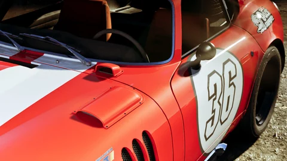
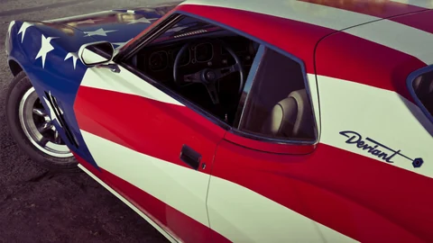
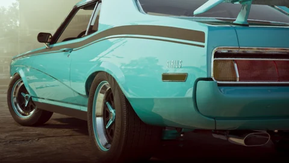

Une preuve officielle.
L’existence du collectible est établie par une source officielle. Une image d’ambiance ou un simple objet aperçu ne suffit pas à prouver une mécanique de collection.
Base de données
Une collection déjà confirmée par Rockstar, les repères de toute la série, et votre carnet pour cocher chaque trouvaille. Rien qui vienne des fuites.



Édition Ultimate
Rockstar présente sur la page de l'édition Ultimate une activité appelée Collection de voitures classiques : retrouver à travers Leonida des voitures classiques abandonnées ou des projets inachevés, puis leur redonner tout leur éclat. La commande vient de Wyman, collectionneur excentrique et mécanicien local. C'est, à ce jour, la seule collection décrite officiellement.
Les captures publiées montrent cinq modèles dans son atelier. Chacun a sa fiche.

Rien n'est annoncé pour GTA VI en dehors de la collection de Wyman. Mais chaque épisode a eu ses familles d'objets à traquer, et ce sont elles qui serviront de grille de lecture le 19 novembre.
Le modèle : des paquets planqués sur les toits et sous les piliers, chacun débloquant une arme à la planque.
Chaque famille d'objets liée à une ville et à une récompense concrète : armes, respect, chance au casino.
Les pigeons à abattre remplaçaient les paquets ; un hélicoptère en récompense à la fin.
Le plus gros inventaire de la série, avec des succès dédiés et des véhicules uniques à la clé.
Le squelette est en place : chaque famille aura ses fiches, ses filtres, sa progression et ses marqueurs sur la carte. Les statuts se mettront à jour au fil des annonces.
Paquets, jetons, mallettes : la tradition depuis Vice City.
Confirmé par la collection de Wyman dans l'édition Ultimate.
Les sauts qui comptent, avec ralenti et succès.
La pêche apparaît dans les captures officielles, avec des prises variées.
Panoramas et lieux à photographier avec le téléphone.
Ce que chaque famille complète débloque : armes, véhicules, tenues.
Le catalogue, les filtres, le carnet local, les sorties, l'export et la liaison avec la carte fonctionnent dès maintenant.
Les objets eux-mêmes : nom, catégorie, région, emplacement vérifié, récompense. Chaque fiche indiquera son niveau de certitude.
Publier des listes tirées des fuites ou des rumeurs. Une fiche n'existe que si une source vérifiable la soutient.
Chaque objet aura sa fiche : ce qu'il est, où il se trouve quand c'est vérifié, ce qu'il rapporte, et son niveau de certitude. Passez d'une carte à l'autre pour voir ce que vous y trouverez.
LA COLLECTION COMMENCE ICI
Nous attendons des éléments suffisamment documentés pour publier les premières fiches. Aucun objet, emplacement ou total n’est inventé pour remplir le catalogue.
Comprendre les statutsTrouvés, favoris et notes restent sur cet appareil. La sauvegarde JSON les emmène sur un autre.
Le suivi commencera avec les premières fiches éligibles. Le total du jeu est inconnu.
Enregistrez une copie de votre checklist pour la retrouver dans un autre navigateur.
Sans compte. La progression reste dans ce navigateur. Une importation fusionne vos trouvailles et favoris ; ses notes remplacent celles du même objet.
Trois outils pour ne pas refaire le même travail à chaque session : garder une recherche, préparer l'ordre de la prochaine sortie, emporter la liste hors du site.
Aucun collectible suffisamment documenté n’est publié pour le moment. Les outils de recherche et de suivi seront utilisables dès les premières fiches vérifiées.
Consulter le catalogueVérifier les sourcesOuvrez sa fiche puis « Révéler l’emplacement précis ». Le bouton vers la carte apparaît seulement si des coordonnées vérifiées sont disponibles. Une région connue ne suffit pas pour placer un marqueur.
Ouvrir la carte de LeonidaLe carnet est sauvegardé dans ce navigateur. Exportez-le en JSON avant de changer d’appareil ou d’effacer les données du site, puis importez ce fichier ailleurs. Le fichier comprend vos trouvailles, favoris, notes, recherches enregistrées et votre liste « Ma sortie ».
Ouvrir mon carnetVoir mes outilsIl mesure les fiches publiées éligibles au suivi dans ce catalogue. Il ne représente pas la complétion totale de GTA VI. Les hypothèses, favoris et notes n’augmentent pas ce pourcentage.
Voir mon suiviComprendre les statutsLes emplacements précis, récompenses et conseils restent repliés par défaut. Sur une fiche, ouvrez les indices un par un. L’option d’affichage des spoilers permet de révéler les informations d’un seul coup si vous le souhaitez.
Choisir une ficheAjoutez les fiches qui vous intéressent à « Ma sortie », puis choisissez leur ordre avec les boutons de déplacement. Cette liste personnelle sert de pense-bête ; elle ne calcule pas de trajet routier ni de temps de parcours.
Préparer ma sortieEnregistrez votre recherche pour la retrouver dans ce navigateur, ou copiez le lien de la vue filtrée. Ce lien partage les critères, sans envoyer vos notes ni votre progression. Les filtres « trouvés » et « favoris » utiliseront le carnet de la personne qui ouvre le lien.
Enregistrer ou partager une vueFiltrez le catalogue puis utilisez l’export CSV ou l’impression dans les outils. Vous pouvez inclure vos notes personnelles. Choisissez les options de votre navigateur pour imprimer sur papier ou enregistrer un PDF.
Exporter ma sélectionAucune réponse ne correspond. Essayez « sauvegarde », « carte » ou « filtres », ou signalez votre question.
Alt + K : accès direct à la recherche. Les réponses peuvent aussi être partagées par leur lien.
LA CONFIANCE AVANT LES CHIFFRES
Un statut lisible. Les inconnues restent des inconnues.
L’existence du collectible est établie par une source officielle. Une image d’ambiance ou un simple objet aperçu ne suffit pas à prouver une mécanique de collection.
Plusieurs preuves sérieuses permettent une identification solide. Le statut reste distinct d’une confirmation officielle et les sources sont précisées.
Une hypothèse reste explicitement signalée. Elle n’entre pas dans votre pourcentage de collection et ne reçoit aucun emplacement inventé.
Et après ?
D'ici là, le catalogue reste honnête : rien d'inventé, rien tiré des fuites. La carte, les fiches, le carnet et les calculateurs sont déjà à toi.